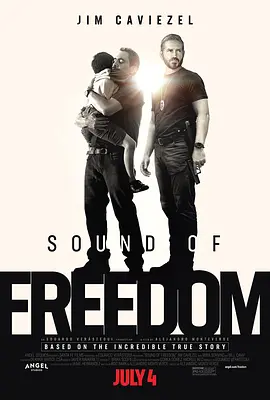

7.7
自由之声
Sound of Freedom
2023
美国
评分 7.7
导演:
亚历杭德罗·戈麦斯·蒙特维尔德
演员:
吉姆·卡维泽 / 比尔·坎普 / 克里斯特尔·阿帕里西奥 / 哈维尔·戈迪诺 / 耶西卡·博罗托·佩里曼
类型:
传记,动作,犯罪
剧情简介
影片改编自前美国政府特工 Tim Ballard 的真实经历。影片伊始，一位洪都拉斯父亲的孩子被人以模特拍摄之名诱拐，引发特工巴拉德震动。巴拉德在发现美国边境与海内外儿童性贩卖网络之间的接点后，放弃原本的安稳职位，决定深入哥伦比亚丛林，追踪那条通往黑暗的链条。 在丛林深处，他掩饰身份扮作买家，潜入一个以儿童为交易对象的组织。他看到被操纵的孩童、隐藏的金钱机制、以及曾经被视为无声的受害者。影片将这种正义与恐惧交织的经历描绘得直击人心。过程中，巴拉德不仅在体力与心力上承受极限，更要面对体制的限制、资源的匮乏与时间的紧迫。他在现实与信仰之间挣扎，而救援行动也不断被邪恶势力的阴影拉扯。影片最终将这一系列看似遥远的罪行拉回观众面前，让人明白：被拐卖的孩童、沉默的黑幕、以及那条通往绝望的路径，或许比想象中更接近我们。影片不仅是动作冒险，也是一场关于责任、勇气与人性的探问。它让我们在沉重中仰望——当有人选择走出舒适区，是否能真正带来改变。（注：影片包含儿童拐卖、暴力潜在暗示、心理冲击强烈场景）